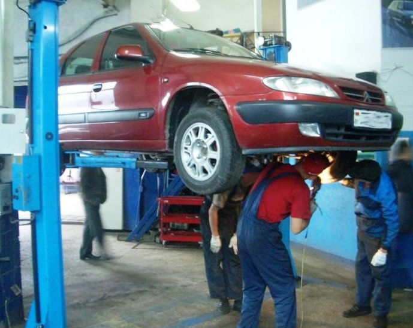

Перечень работ
- Жестянка
- Малярные работы
- Частичное и полное восстановление кузова
Приедете сами - приведете друзей.
Без излишнего пафоса, но надежно и на совесть. Потому что, мы дорожим нашими клиентами.
Наш адрес: Москва, ул. Сельскохозяйственная, 6а
Звоните +7 926 803 02 85 +7 926 348 95 66. Мы всегда вам рады!